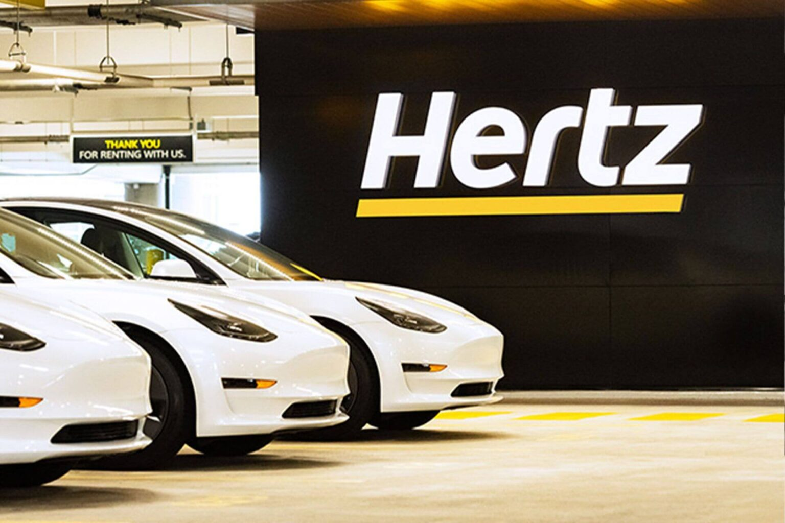

Caminhos opostos. Hertz Portugal vai continuar a reforçar frota elétrica
Ao contrário do que vai fazer em «casa», nos EUA, a Hertz vai continuar a reforçar a frota de automóveis 100% elétricos em Portugal.

A Hertz anunciou, na passada semana, que vai vender um terço da sua frota de automóveis elétricos nos Estados Unidos da América (EUA), cerca de 20 000 veículos, para voltar a comprar modelos com motor de combustão.
A gigante norte-americana do aluguer de automóveis justifica esta decisão com as despesas elevadas relacionadas com colisões e com a baixa procura por parte dos clientes, desistindo assim do objetivo de converter 25% da sua frota total para elétricos, como chegou a anunciar.
A juntar a isso, a descida dos preços dos elétricos nos automóveis novos que se verificou em 2023 reduziu o valor de revenda dos modelos elétricos usados da Hertz, fator que também terá pesado nesta decisão.